The original menu split related actions across too many screens.
Marathon UX Audit & UI Redesign
UX audit / interface redesign
UX audit and interface redesign for a confusing extraction-shooter menu flow.
Focused on navigation, loadout clarity, item comparison, and reducing friction before match start.
I redesigned the pre-match flow so players could understand blockers, loadout, party, map, and contracts from one hub.
Design process
Jump to a stage of the case study.
Final output preview
Reworked screens from the Prepare Hub, inventory, item comparison, and shell system.
Drag / scroll
Related actions were split across deep menu paths, making pre-match setup feel slower than it needed to be.
Group loadout, vault, party, map, contracts, and search into a clearer run-prep flow.
Players can scan blockers, compare gear, and make pre-match decisions without bouncing between screens.
The Problem
The menus were the game.
Not in a good way. Players spent more time navigating screens than actually playing: five or six levels deep just to reach basic items, with Loadout and Vault living in completely separate places with no way to compare gear between them.
Navigation Depth
5 to 6 menu levels to reach common items. Vault, Codex, and Contracts are siloed with no cross-access.
Disconnected Flows
Loadout and Vault are separate with no link. Players prep a run without seeing available gear.
Visual Overload
Every screen surfaces too much simultaneously. Players cannot tell what is actionable from what is decorative.
Tooltip Hunting
No comparison view. Reading stats requires hovering each item individually and memorizing between hovers.
No Shortcuts
No way to jump directly to key screens. Every session means re-navigating the same deep paths.
Controller Bias
UI appears designed controller-first. PC mouse patterns feel awkward and unnatural.
Audit Evidence
Improvement was measured as fewer context switches.
Because this was a self-directed audit, I did not claim production analytics. I judged improvement by navigation depth, memory load, and whether the next decision stayed visible.
TaskOriginal issueRedesign decisionExpected improvement
Start a runParty, map, contract, and loadout lived as separate checks.Create one Prepare Hub with blockers visible.Faster readiness scan before matchmaking.
Compare gearPlayers had to hover, remember, and re-hover item stats.Add side-by-side comparison inside inventory.Less memory work and clearer tradeoffs.
Manage loadoutVault and equipped gear were disconnected.Merge loadout, backpack, shell, and vault into one workspace.Fewer jumps between screens.
Choose shellRole, identity, and abilities were hard to judge quickly.Use large shell cards with ability and source details.Faster selection with less inspection friction.
Research
Players named the friction.
The complaints were not vague. Players pointed at navigation, inventory control, and disconnected prep flows.
"I will return this game until they change the UI. Why can I not multi select inventory items? Why is navigation in menus awful? This is literally insane for Bungie to have done."
Steam - Navigation
"Marathon's UI is a headache that I fear will send me right back to Arc Raiders - tedious even for Bungie, grandmaster of ridiculous Destiny currencies."
PC Gamer - Overall UX
"The loadout bars should just be on the main menu. I should be able to click armoury, vault etc from the first menu."
Community - IA Structure
"I genuinely dread how the inventory screen looks and how disconnected it is from the Vault, like why?"
Community - Disconnected Flows
The Flow
Four common tasks took too many steps.
I mapped four common tasks through the original UI. Things that should take two or three steps took up to 21.
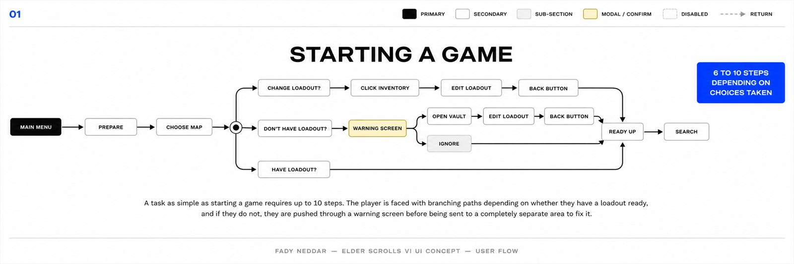
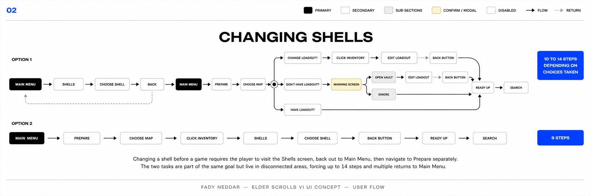
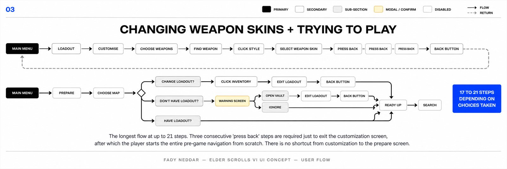
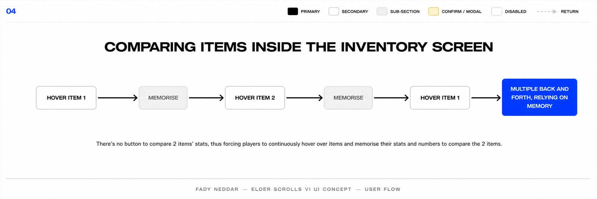
The Fix
One run-prep hub.
The first screen becomes a run-prep dashboard instead of a doorway to more menus.
Before
After
01 - Before / After
Prepare Hub
Screen The redesigned landing screen before a run. Prepare, factions, codex, map, contracts, party state, currency, and search are all in the same view.
Decision The runner and the blue hangar stay as the visual anchor, while useful pieces move into clear zones: navigation on the left, live pressure on the right, actions along the bottom.
Fix Players can understand the run, fix blockers, and search without bouncing through separate menus.
02 - Main Menu Detail
Map Info Hover
Screen A quick information card for the selected map, showing threat, location, and a short description from the lobby.
Decision It opens beside the map tile instead of taking over the screen, so the player understands it as extra context, not a new page.
Fix Players can check what they are about to queue into without leaving the prepare flow or guessing from a map name alone.
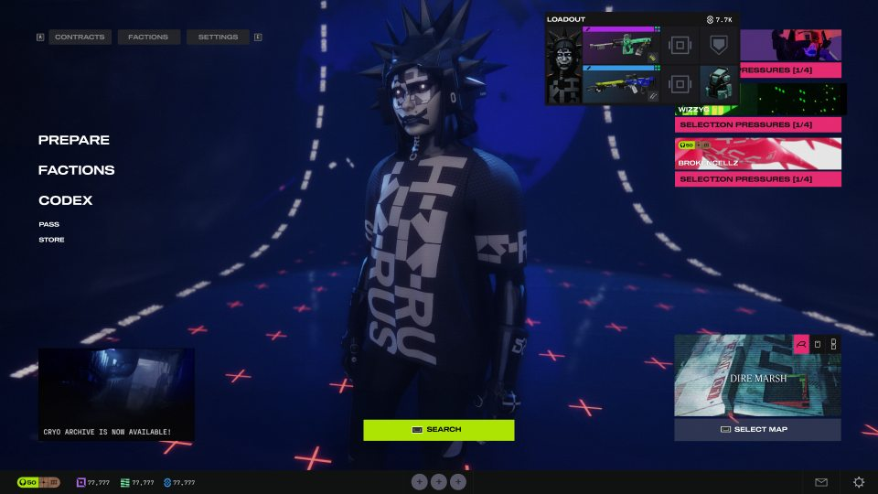
03 - Main Menu Detail
Loadout Preview
Screen A compact loadout card that shows the active shell, weapons, core gear, and rough value directly from the hub.
Decision It uses the same card language as the full inventory, just tightened into a small overlay.
Fix It removes the small but constant back-and-forth of checking gear before every search.
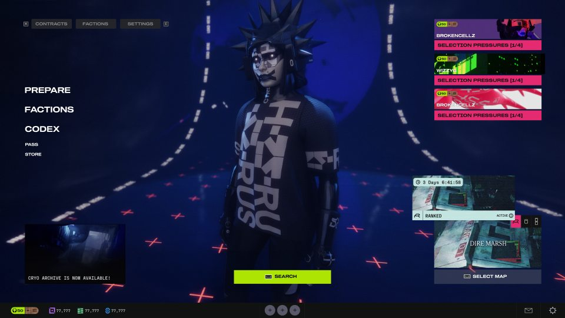
04 - Main Menu Detail
Game Mode Card
Screen A mode card for ranked or timed activity states, paired with the active map tile.
Decision The timer and active state sit on top because they change the decision. The image stays below so it still feels tied to the destination.
Fix Players know what queue is active and how urgent it is before they hit search.
05 - Social State
Party Stack
Screen A visible party stack that shows teammates and their selection pressure cards while staying on the main screen.
Decision The cards stay bright and vertical on the right because they are run blockers, not background info.
Fix The player can see who is ready, who is missing requirements, and what is stopping the party from searching.
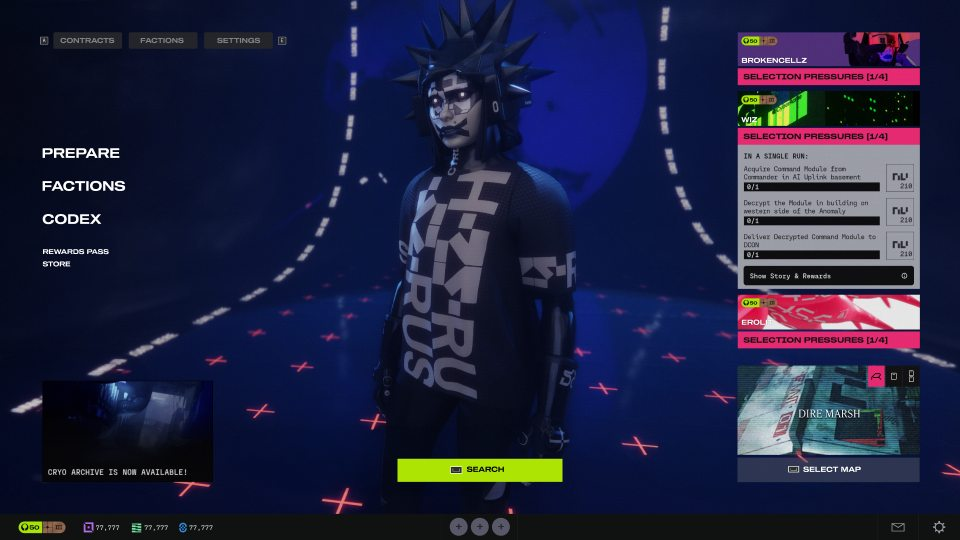
06 - Main Menu Detail
Contract Peek
Screen An expanded contract card that shows objectives and progress without opening the full contracts page.
Decision It expands near the pressure stack, so the player can connect the warning to the exact task causing it.
Fix Players stop treating contract cards as vague alerts. They can read the blocker and act on it from the same place.
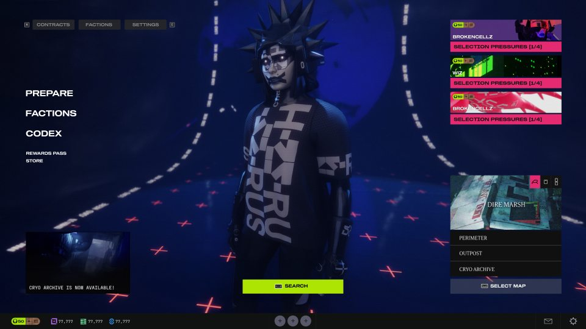
07 - Map Control
Map Select List
Screen A small map switcher that opens from the active map tile and lists the available destinations.
Decision The map list stays inside the tile footprint, so it feels like a dropdown with weight instead of a separate screen.
Fix Map swapping becomes part of prep, not another detour before matchmaking.
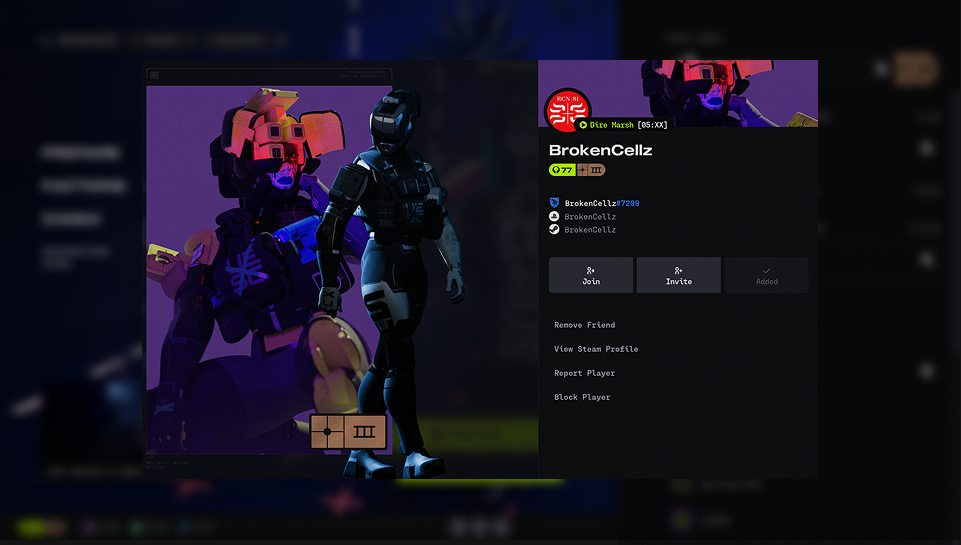
08 - Social Layer
Friend Profile
Screen A focused profile panel with banner art, name, account IDs, join/invite actions, and safety options.
Decision The background blurs instead of disappearing, and the profile uses a split image/info layout so it still feels tied to the lobby.
Fix Checking or inviting someone no longer feels like opening a separate social app inside the game.
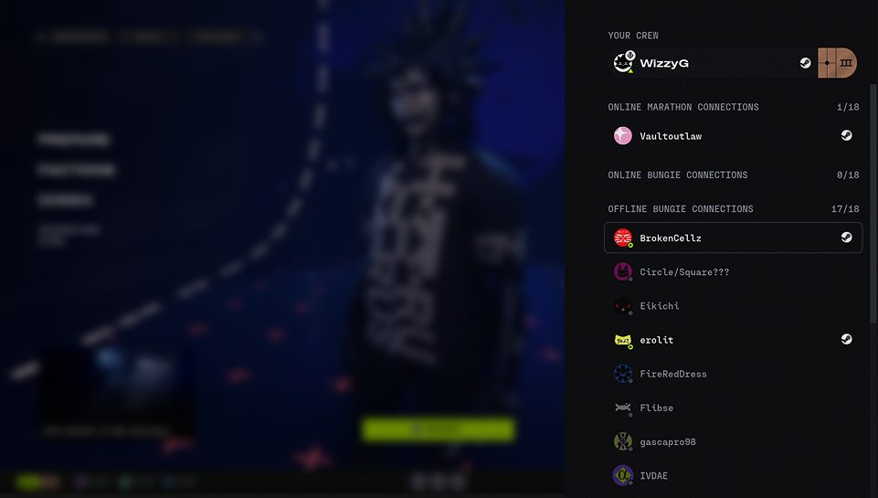
09 - Social Layer
Friends List Drawer
Screen A right-side drawer for crew, Marathon connections, Bungie connections, and offline friends.
Decision It slides in over the lobby and keeps status groups stacked vertically, which makes scanning faster than a full-page friends screen.
Fix Party management becomes a quick side action, not something that breaks the flow of preparing for a run.
Final Design
Loadout and Vault in one workspace.
The original Loadout and Vault treated the two most connected actions as separate chores. I rebuilt it as one working table where equipped gear, runner state, and stored items stay visible together.
Before
After
01 - Before / After
Unified Loadout + Vault
Screen A single working space for the equipped loadout, backpack, shell slots, character, and vault.
Decision The screen is split by task: current build on the left, character and slot targets in the middle, stored gear on the right.
Fix The original separated Loadout and Vault, so players had to remember items between screens.
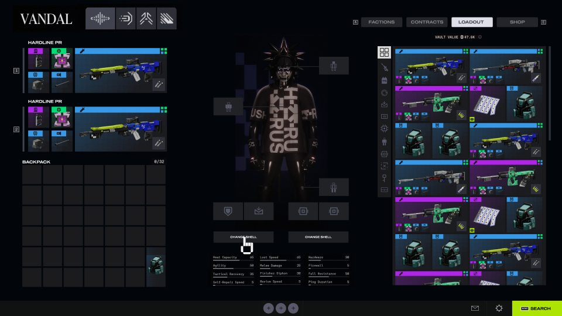
02 - Inventory Screen
Equipped Gear + Vault
Screen The main inventory state with equipped weapons and backpack on the left, the runner in the center, and the vault grid on the right.
Decision The left side answers what am I carrying, the right side answers what do I own, and the center keeps shell changes connected to the body.
Fix Players can prep a build without opening separate pages just to understand what is equipped versus stored.
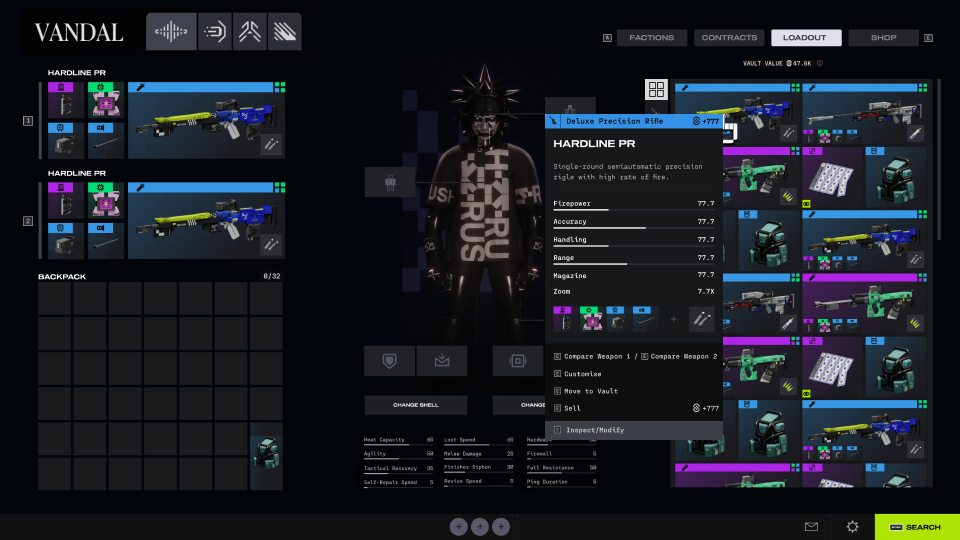
03 - Inventory State
Item Inspect
Screen A hover panel for a selected weapon, with stats, attached parts, value, and available actions.
Decision The card opens beside the item grid instead of replacing the screen, keeping the vault context visible.
Fix It cuts down tooltip hunting and lets players inspect items without losing track of where the item came from.
04 - Inventory State
Item Compare
Screen A side-by-side comparison state for two weapons, with matching stat rows and attachment previews.
Decision The comparison gets its own dark center panel so both items get equal weight while the inventory stays visible behind it.
Fix The player does not have to memorize numbers from one hover to the next. The decision can happen on-screen.
Final Design
Shell choice reads faster.
Shell choice had to read as gameplay and identity at the same time: role, abilities, visual style, and source all needed to be clear before equipping.
01 - Shell System
Shell Select
Screen A shell browser with large character art, a left-side roster, rarity markers, and a right panel for abilities and traits.
Decision The shell gets the stage because it is both gameplay and identity. The ability panel stays separate so players can read the kit without fighting the artwork.
Fix Shell choice becomes understandable before equipping. Players can read role, personality, and function in one place.
02 - Shell System
Shell Customization
Screen A detailed shell view for skin, source, style, and flavor text.
Decision It is built more like a poster than a list: big preview first, readable lore panel second, equip/source actions kept close to the name.
Fix Cosmetics stop being tiny thumbnails. Players can judge the full look and understand where it came from without opening another menu.
What Changed
Less memory work before matchmaking.
Show the answer before the prep — Everything the player needs before a run lives on one screen.
Comparison on screen, not in memory — Loadout and Vault merged so players stop memorizing stats between hovers.
Dense where it should be — The inventory is intentionally heavier than the hub because prep is a different mode than launching.
Reflection
What I would test next.
The redesign should be tested against real pre-match tasks: readying up, fixing blockers, comparing gear, and switching shells.
Depth is not the same as complexity — Marathon needed dense prep information, but not six layers of navigation.
Time-to-ready — I would compare the original and redesign across common setup tasks and controller/mouse input.
Empty and error states — The next pass should cover missing gear, disconnected party members, and failed search states.